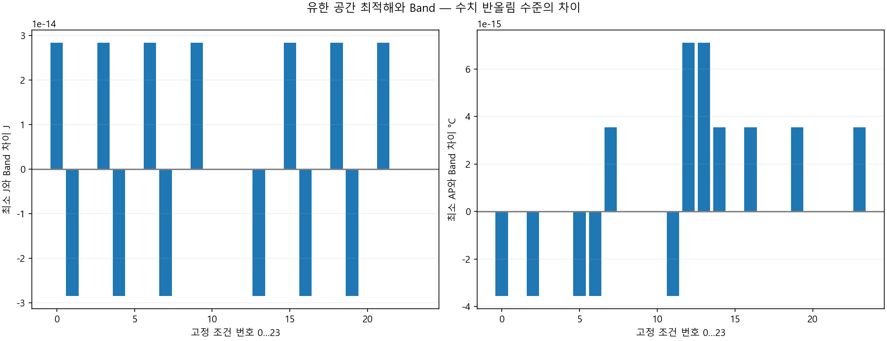
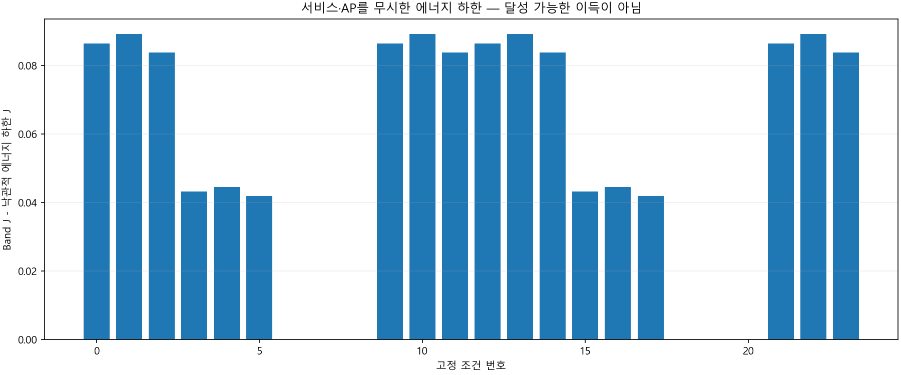
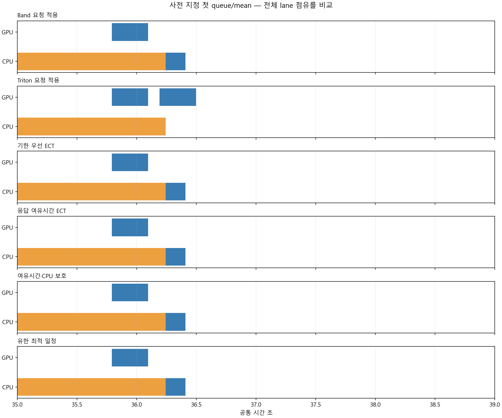
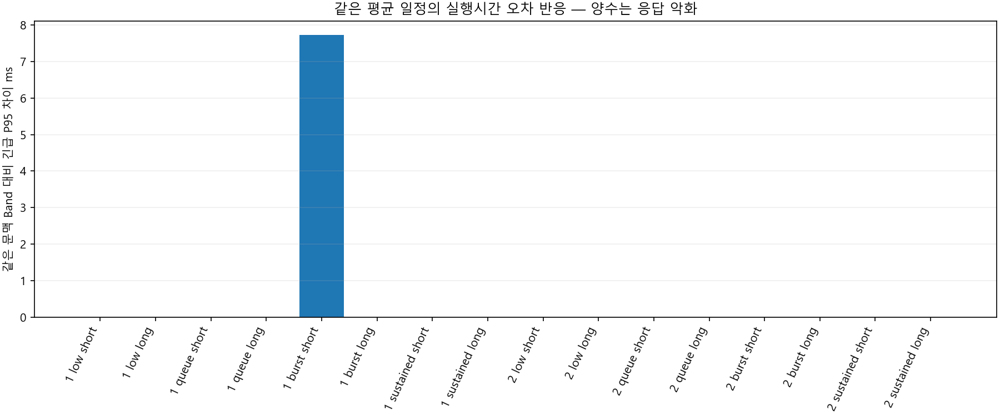
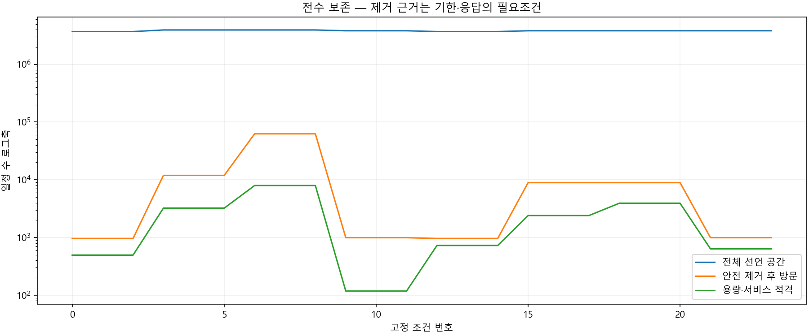

4요청·24조건. Band보다 공동 개선하는 일정0. 정확성은100ms/3s + Band시각의 유한 공간에 한정합니다.
범위와 결과 · 전수 인증 CSV · 문맥 교차 CSV
최고 AP는 모형값이고 표면온도가 아닙니다. 미래를 아는 참고 일정이며 온라인 정책 최적성이나 실제 폰 우위가 아닙니다.
| 규칙 | 완료 | 긴급 P95 ms | 일반 평균 ms | 전체 J | 최고 AP °C |
|---|---|---|---|---|---|
| Band 요청 적용 | 96 | 253.636399 | 750.991512 | 134.612737 | 29.6798186 |
| Triton 요청 적용 | 96 | 322.573751 | 750.991512 | 134.670336 | 29.6798461 |
| 기한 우선 ECT | 96 | 253.636399 | 750.991512 | 134.612737 | 29.6798186 |
| 응답 여유시간 ECT | 96 | 253.636399 | 750.991512 | 134.612737 | 29.6798186 |
| 여유시간·CPU 보호 | 96 | 253.636399 | 750.991512 | 134.612737 | 29.6798186 |
| 조건 | 부하 | 문맥 | 전체 공간 | 방문 | 공동감소 일정 | 에너지 하한 차이 J | 최소 J 차이 | 최소 AP 차이 |
|---|---|---|---|---|---|---|---|---|
| 0 | low | mean | 3694084 | 961 | 0 | 0.0864937318 | 2.84217094e-14 | -3.55271368e-15 |
| 1 | low | short_context | 3694084 | 961 | 0 | 0.0891951511 | -2.84217094e-14 | 0 |
| 2 | low | long_context | 3694084 | 961 | 0 | 0.0837923132 | 0 | -3.55271368e-15 |
| 3 | queue | mean | 3936256 | 11904 | 0 | 0.0432468814 | 2.84217094e-14 | 0 |
| 4 | queue | short_context | 3936256 | 11904 | 0 | 0.0445975911 | -2.84217094e-14 | 0 |
| 5 | queue | long_context | 3936256 | 11904 | 0 | 0.041896172 | 0 | -3.55271368e-15 |
| 6 | burst | mean | 3936256 | 62496 | 0 | 3.20890479e-08 | 2.84217094e-14 | -3.55271368e-15 |
| 7 | burst | short_context | 3936256 | 62496 | 0 | 3.18138405e-08 | -2.84217094e-14 | 3.55271368e-15 |
| 8 | burst | long_context | 3936256 | 62496 | 0 | 3.1737045e-08 | 0 | 0 |
| 9 | sustained | mean | 3813248 | 992 | 0 | 0.0864937318 | 2.84217094e-14 | 0 |
| 10 | sustained | short_context | 3813248 | 992 | 0 | 0.0891951504 | 0 | 0 |
| 11 | sustained | long_context | 3813248 | 992 | 0 | 0.0837923125 | 0 | -3.55271368e-15 |
| 12 | low | mean | 3694084 | 961 | 0 | 0.0864937318 | 0 | 7.10542736e-15 |
| 13 | low | short_context | 3694084 | 961 | 0 | 0.0891951511 | -2.84217094e-14 | 7.10542736e-15 |
| 14 | low | long_context | 3694084 | 961 | 0 | 0.0837923132 | 0 | 3.55271368e-15 |
| 15 | queue | mean | 3813248 | 8928 | 0 | 0.043246882 | 2.84217094e-14 | 0 |
| 16 | queue | short_context | 3813248 | 8928 | 0 | 0.0445975911 | -2.84217094e-14 | 3.55271368e-15 |
| 17 | queue | long_context | 3813248 | 8928 | 0 | 0.041896172 | 0 | 0 |
| 18 | burst | mean | 3813248 | 8928 | 0 | 3.20890479e-08 | 2.84217094e-14 | 0 |
| 19 | burst | short_context | 3813248 | 8928 | 0 | 3.18138405e-08 | -2.84217094e-14 | 3.55271368e-15 |
| 20 | burst | long_context | 3813248 | 8928 | 0 | 3.15621662e-08 | 0 | 0 |
| 21 | sustained | mean | 3813248 | 992 | 0 | 0.0864937318 | 2.84217094e-14 | 0 |
| 22 | sustained | short_context | 3813248 | 992 | 0 | 0.0891951504 | 0 | 0 |
| 23 | sustained | long_context | 3813248 | 992 | 0 | 0.0837923125 | 0 | 3.55271368e-15 |
| 원 조건 | 목적 | 실행 문맥 | 서비스 유지 | 비용 포함 비악화 | 긴급 P95 차이 ms | J 차이 | AP 차이 °C |
|---|---|---|---|---|---|---|---|
| 0 | min_J | short_context | True | True | 0 | 0 | 0 |
| 0 | min_J | long_context | True | True | 0 | 0 | 0 |
| 0 | min_AP | short_context | True | True | 0 | 0 | 0 |
| 0 | min_AP | long_context | True | True | 0 | 0 | 0 |
| 3 | min_J | short_context | True | False | 0 | -5.84435611e-10 | 3.56603991e-09 |
| 3 | min_J | long_context | True | True | 0 | 0 | 0 |
| 3 | min_AP | short_context | True | False | 0 | -5.84435611e-10 | 3.56603991e-09 |
| 3 | min_AP | long_context | True | True | 0 | 0 | 0 |
| 6 | min_J | short_context | False | False | 7.723371 | 0.00021549157 | -3.89960846e-08 |
| 6 | min_J | long_context | True | True | 0 | 0 | 0 |
| 6 | min_AP | short_context | False | False | 7.723371 | 0.00021549157 | -3.89960846e-08 |
| 6 | min_AP | long_context | True | True | 0 | 0 | 0 |
| 9 | min_J | short_context | True | False | 0 | 0 | 3.44036266e-09 |
| 9 | min_J | long_context | True | True | 0 | 0 | 0 |
| 9 | min_AP | short_context | True | False | 0 | 0 | 3.44036266e-09 |
| 9 | min_AP | long_context | True | True | 0 | 0 | 0 |
| 12 | min_J | short_context | True | True | 0 | 0 | 0 |
| 12 | min_J | long_context | True | True | 0 | 0 | 0 |
| 12 | min_AP | short_context | True | True | 0 | 0 | 0 |
| 12 | min_AP | long_context | True | True | 0 | 0 | 0 |
| 15 | min_J | short_context | True | False | 0 | 0 | 3.44036977e-09 |
| 15 | min_J | long_context | True | True | 0 | 0 | 0 |
| 15 | min_AP | short_context | True | False | 0 | 0 | 3.44036977e-09 |
| 15 | min_AP | long_context | True | True | 0 | 0 | 0 |
| 18 | min_J | short_context | True | False | 0 | 0.00021549157 | -5.49716752e-08 |
| 18 | min_J | long_context | True | True | 0 | 0 | 0 |
| 18 | min_AP | short_context | True | False | 0 | 0.00021549157 | -5.49716752e-08 |
| 18 | min_AP | long_context | True | True | 0 | 0 | 0 |
| 21 | min_J | short_context | True | False | 0 | 0 | 3.57366403e-09 |
| 21 | min_J | long_context | True | True | 0 | 0 | 0 |
| 21 | min_AP | short_context | True | False | 0 | 0 | 3.57366403e-09 |
| 21 | min_AP | long_context | True | True | 0 | 0 | 0 |




